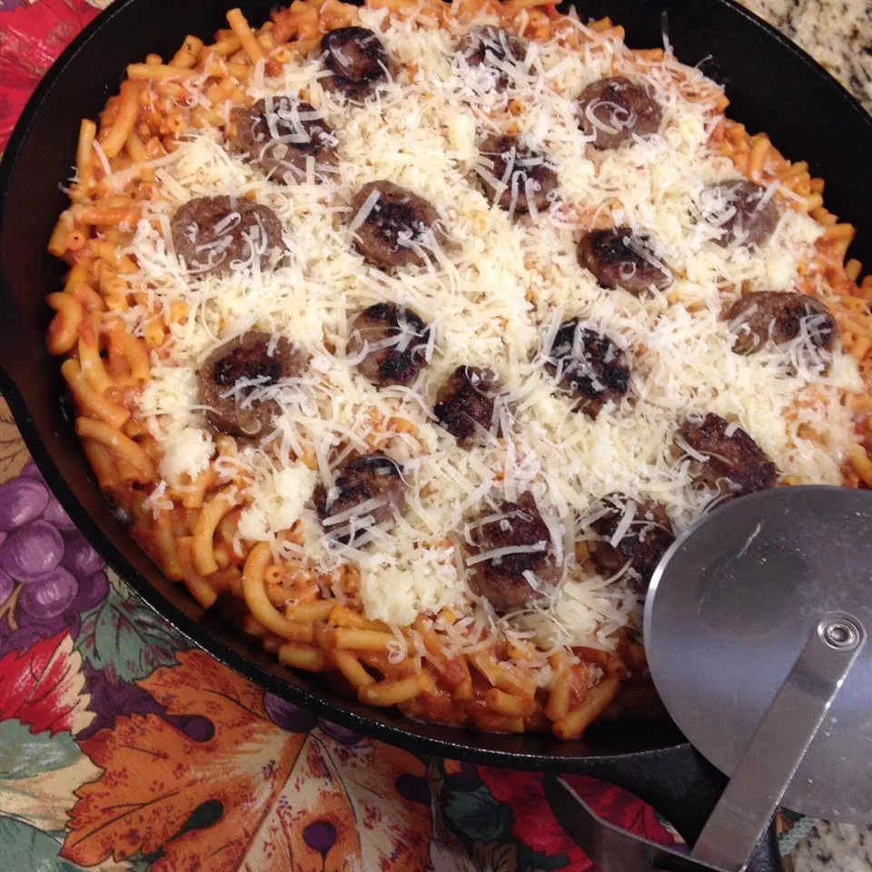

Recetas de nuestros chefs
Aquí encontrarás todas las recetas que nuestros chefs de Odín tienen para ti.
Ingredientes:
- 2 paquetes (7.25 onzas) de macarrones con queso crudos
- 1 lata (14 onzas) de salsa para pizza
- 1 paquete (8 onzas) de queso mozzarella, rallado y dividido
- ¼ taza de queso parmesano rallado, cantidad dividida
- 6 onzas de salchicha de pepperoni, en rodajas
Como se prepara:
- Ponga a hervir una olla grande de agua ligeramente salada. Agregue la pasta y cocine de 5 a 8 minutos o unos 3 minutos antes de que esté cocida; escurra y coloque los fideos en una fuente para hornear de 9x13 pulgadas.
- Precaliente el horno a 400 grados F (200 grados C).
- Agregue la salsa para pizza, los paquetes de queso en polvo de la mezcla de macarrones con queso, la mitad del queso mozzarella, la mitad del queso parmesano, el pepperoni y cualquier otro aderezo para pizza que desee agregar. Cubra con los quesos restantes.
- Hornee en horno precalentado durante 45 minutos o hasta que el queso esté burbujeante; atender.